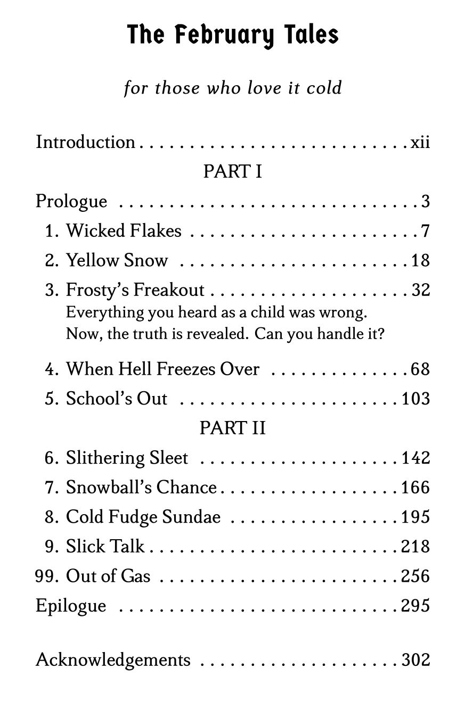

Novelette Documentation
 Home Tutorial Document Body Front Matter
Home Tutorial Document Body Front Matter
 Index
Index
Table of Contents
Overview
Standard LaTeX is used for academic works, where the material is organized in a hierarchy of chapters, sections, and so forth. There is a particular way to number and name each portion, and a particular method for organizing it all into a table of contents. That allows academic readers to quickly find things, and quickly jump in any order from one place to another.
But Novelette is for popular fiction, or those nonfiction books that read like popular finction. The reader is expected to progress in linear order. Most such books have no table of contents, because it is unnecessary. If a book's chapters have only numbers, without distinctive titles, then a table should not be used.
If your book is a collection of short stories, which do not need to be read in order, then a table is useful. If your book has chapters with distinctive names, then a table is a decorative method for outlining the overall plot.
Novelette does not use standard LaTeX methods. If you need a table, design it yourself, using the environment and commands described here. Page numbers are not automatic: When your book is (nearly) finished, you must edit the table, and provide the numbers. Novelette's only assistance is to warn you when they are wrong.
If you need advice regarding what goes into the table, or where to place it in your book, search the Internet for "book design".
Table Title
 TOP
TOP
The table must be in the display zone of a component in front matter.
Use \styleN for the table's title. In many cases, the design will
look better if there is some vertical space above the title, and between the title
and the table.
The title may be Contents or something else. One possibility is to use the
title of the book. This is especially useful if the book is a collection of short stories.
You may place a short dedication or epigraph between the title and the table. Then, you do not need to place that material on its own page.
Example: This is for a book titled The February Tales, which is a collection of short stories. Instead of a dedication or epigraph, there is a quick remark between the title and the table:
\begin{component}
\blankline\blankline
\style2{The February Tales}
\blankline
\style6{\textit{for those who love it cold}}
\blankline
% table follows
% possibly more material
\end{component}
The toc Environment
TOP
Except for its title, the table's content must be within a toc environment:
\begin{toc}[format=F,pad=P] ... contents ... \end{toc}
-
F-> Eitherenteror number N. Selects whether the table has centered entries, or is a vertical blockblock with offsetsN. -
P-> Number 0<=P<=1. Default 0. Applies padding above each\entry. Useful for vertically stretching a short table. Amount of padding isPmultiplied by the normal baseline skip. -
The table may extend for more than one page. You may also create more than one table, on the same page, or on other pages.
-
You cannot place other material (such
\styleNor\image) within the table. If necessary, break a table into multiple tables, so you can put other material between them.
Entries
TOP
Each item in the table uses an \entry command. The entire entry must fit
on a single line. This is unlikely to be a problem, unless you place entries in a vertical
table with excessive side offsets.
Although the command always uses the same syntax, the typeset result will look different in the center and vertical table formats.
\entry[id=I,page=P,list=L}{name}
-
I-> Refers to a subsequent component id. Default empty.If an entry has empty
id, but nonemptypage, you will be warned. -
P-> The page number seen in print (bookpage). May be italic or arabic. Usually not the same as the PDF page number.Default
Pis empty: the table will not show a page number for this entry. This is appropriate for an entry such asPART I, which merely serves to separate other entries.When an entry will have a page number, but you do not know it, set
page=0. That will format the entry for future insertion of the correct page number.Some pages do not print their numbers. In this case,
Pis the number that you would see, if it printed.Novelette does not have automatic page numbering. If you set the wrong
Pfor itsI, you will be warned when compiling the whole document. -
L-> May be a one or two digit arabic integer, 0–99. Default empty. Note that0is not the same as empty.-
When
Lis empty (default), nothing is inserted to the left of the entry name. -
When
Lis 1 to 99, it prints at the start of the entry, followed by period and space.If the table is vertical, single-digit numbers are padded at left, so that the periods vertically align, and their following entry names align.
-
When
Lis0, and the table uses vertical format, an empty space is inserted to the left of the entry name. Then, the name aligns with other names that do have numbers.If the table has center format,
0is ignored.
-
-
{name}-> Is the chapter name, or short story name, or other things such as Prologue, etc.Example: If chapter
3has chapter titleThe Noise, use3as the list number, andThe Noiseas name.Example: Since the list numbers cannot be Roman, chapter
XV. The Knockwould use all of it as the name.If your book contains chapters without names, then you should not be using a table of contents!
Sub-Entries
TOP
If you need to follow an entry with a short explanation, use \subentry.
For example, if the book is a collection of short stories with different authors, the entry would name the story, and the subentry would name its author. Or, a subentry may be a "teaser" that briefly describes what the reader will find in that chapter.
Although either table format may use subentries, they are more effective when the format is vertical.
\subentry[option]{text}
-
If the option is
[small]then the text prints at reduced size and skip. Otherwise, the text prints normal. No other options. -
No padding is applied above a subentry.
-
If the table format is center: The subentry is centered. You may use manual line breaks for multi-line text.
-
If the table format is vertical: The sides of the subentry are padded. Its left side begins where list-numbered entry names begin. Its right side ends before page numbers begin.
You may begin the text with
\indentif desired. Multi-line text will justify and wrap. -
Avoid multi-paragraph subentry text. A subentry should be brief.
Example: In a table with vertical sides:
\entry[id=hh,page=68,lead=4]{Horror House}
\subentry{\indent\textit{Don't open that door!}}

Center Format
TOP
\begin{toc}[format=center,pad=P] ... entries ... \end{toc}
This is the simplest format. Each entry prints centered, on one line. If there are subentries, they print centered (if necessary, use manual line breaks).
When an entry has page number, exactly three spaced dots print between the name and page. Without page number, nothing follows the entry name.
Example: \entry[id=sw,page=183,lead=14]{Stormy Weather}

Vertical Format
TOP
\begin{toc}[format=N,pad=P] ... entries ... \end{toc}
This format is block-aligned. Its sides are offset N normal indents
from the margins. Thus, larger N means narrower table.
The entries and subentries will be aligned, according to their options and content. When an entry has page number, a variable number of spaced dots are automatically inserted, connecting its name to its page number.
If you wish to center an entry that has no list number or page number, write
\hfil (only one l) before the name, like this:
\entry{\hfil PART I}.
Example:
\begin{component}
\blankline\blankline
\style5{The February Tales}
\blankline
\style7{\textit{for those who love it cold}}
\blankline
\begin{toc}[format=3,pad=.2]
\entry[id=pro,page=1]{Prologue}
\entry{\hfil PART I}
\entry[id=wf,page=7,lead=1]{Wicked Flakes}
\entry[id=ys,page=18,lead=2}{Yellow Snow}
\entry[id=frsu,page=32,lead=3]{Frosty's Surprise}
\subentry[small]{\indent Everything you heard as a child was wrong. Now, the truth
is revealed, if you can handle it.}
\entry[id=whfo,page=68,lead=4]{When Hell Freezes Over}
\entry[id=sco,page=103,lead=5}{School's Out}
\entry{\hfil PART II}
\entry[id=slsl,page=142,lead=6]{Slithering Sleet}
\entry[id=sch,page=166,lead=7]{Snowball's Chance}
\entry[id=cfs,page=195,lead=8]{Cold Fudge Sundae}
\entry[id=stk,page=218,lead=9]{Slick Talk}
\entry[id=oog,page=256,lead=10}{Out of Gas}
\entry[id=epi,page=295]{Epilogue}
\blankline
\entry[id=ack,page=302]{Acknowledgements}
\end{toc}
\end{component}

Padding
TOP
Both table formats allow pad=P as option, where P is a number
from 0 to 1 (may be decimal). This may be useful for vertically stretching a table
that has few entries.
Nonzero P applies that amount of extra baselineskip above each entry (but not above subentry).
For example, ifP equals 0.5, then half a baselineskip is padded above each entry.
Bookpage Numbers: Not Automated
TOP
Novelette does not automatically populate the table with correct bookpage numbers. You must write them yourself, when you are nearly finished, and you know which components start on which book pages.
When compiling a sub-document, bookpages are meaningless; Novelette pays no attention to them.
When compiling the whole document, Novelette reads the table of contents, and remembers which id is supposed to be at which bookpage. When it subsequently reaches that component id, it checks whether its actual bookpage is what the table said. If they disagree, you will be warned, and informed of the correct number. Then you must edit the table manually.
The document jobname.typo file will contain what you need to know.
The Novelette developer believes that this method is less likely to cause problems, if you exchange documents with a human editor. That may sound complicated, but it is actually how things were done, until very recent times. Did Dickens, Goethe, Rabelais, or Cervantes have automated page numbering? No! They wrote great books without it. So can you. Maybe.
Home Tutorial Document Body Front Matter
TOP